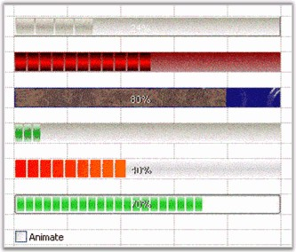

There are several formatting options that can be applied to an ProgressBar cell type embedded into the grid control. The following code example illustrates this.
|
[C#]
// Set up a Progress Bar Control. GridStyleInfo style3 = gridControl1[12, 2]; GridProgressBarInfo progressBarEx3 = style3.ProgressBar; style3.CellType = "ProgressBar"; style3.Themed = false;
// Apply Styles. progressBarEx3.BackGradientEndColor = System.Drawing.Color.RosyBrown; progressBarEx3.BackGradientStartColor = System.Drawing.Color.DarkRed; progressBarEx3.BackgroundStyle = Syncfusion.Windows.Forms.Tools.ProgressBarBackgroundStyles.VerticalGradient; progressBarEx3.BackMultipleColors = new System.Drawing.Color[0]; progressBarEx3.BackSegments = false; progressBarEx3.BackTubeEndColor = System.Drawing.SystemColors.Control; progressBarEx3.BackTubeStartColor = System.Drawing.Color.LightGray; progressBarEx3.FontColor = System.Drawing.Color.Lime; progressBarEx3.ForegroundImage = null; progressBarEx3.GradientEndColor = System.Drawing.Color.Lime; progressBarEx3.GradientStartColor = System.Drawing.Color.Red; progressBarEx3.MultipleColors = new System.Drawing.Color[] { System.Drawing.SystemColors.ControlDarkDark, System.Drawing.SystemColors.ControlLight, System.Drawing.SystemColors.ControlDark, System.Drawing.SystemColors.Control }; progressBarEx3.ProgressStyle = Syncfusion.Windows.Forms.Tools.ProgressBarStyles.Tube; progressBarEx3.SegmentWidth = 12; progressBarEx3.TextVisible = false; progressBarEx3.TubeEndColor = System.Drawing.Color.Black; progressBarEx3.TubeStartColor = System.Drawing.Color.Red; progressBarEx3.ProgressValue = 75; |
|
[VB.NET]
' Set up a Progress Bar Control. Dim style3 As GridStyleInfo = gridControl1(12, 2) Dim progressBarEx3 As GridProgressBarInfo = style3.ProgressBar style3.CellType = "ProgressBar" style3.Themed = False
' Apply Styles. progressBarEx3.BackGradientEndColor = System.Drawing.Color.RosyBrown progressBarEx3.BackGradientStartColor = System.Drawing.Color.DarkRed progressBarEx3.BackgroundStyle = Syncfusion.Windows.Forms.Tools.ProgressBarBackgroundStyles.VerticalGradient progressBarEx3.BackMultipleColors = New System.Drawing.Color(0) {} progressBarEx3.BackSegments = False progressBarEx3.BackTubeEndColor = System.Drawing.SystemColors.Control progressBarEx3.BackTubeStartColor = System.Drawing.Color.LightGray progressBarEx3.FontColor = System.Drawing.Color.Lime progressBarEx3.ForegroundImage = Nothing progressBarEx3.GradientEndColor = System.Drawing.Color.Lime progressBarEx3.GradientStartColor = System.Drawing.Color.Red progressBarEx3.MultipleColors = New System.Drawing.Color() { _System.Drawing.SystemColors.ControlDarkDark, _ System.Drawing.SystemColors.ControlLight,_System.Drawing.SystemColors.ControlDark, _System.Drawing.SystemColors.Control} progressBarEx3.ProgressStyle = Syncfusion.Windows.Forms.Tools.ProgressBarStyles.Tube progressBarEx3.SegmentWidth = 12 progressBarEx3.TextVisible = False progressBarEx3.TubeEndColor = System.Drawing.Color.Black progressBarEx3.TubeStartColor = System.Drawing.Color.Red progressBarEx3.ProgressValue = 75 |

Figure 86: Push Button Cells
For other code samples, refer to the sample in the following location:
C:\Syncfusion\EssentialStudio\[Version Number]\Windows\Grid.Windows\Samples\2.0\Cell Types\Progress Bar Cell Demo